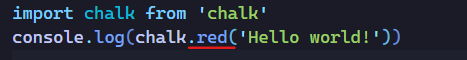

En este capítulo hablaremos sobre las dependencias, ¿Qué son las dependencias? y ¿Cuál es la diferencia entre una dependencia de desarrollo y una de producción?
Aquí hay palabras que si es la primera vez que las escuchamos seguramente nos confundan, como por ejemplo, que es eso de desarrollo y producción, así que vamos a ir por partes.
Lo primero es explicar que es una dependencia.
¿Qué es una dependencia?
Una dependencia es cualquier archivo o cualquier variable que utiliza nuestro proyecto, ya sea en la fase de desarrollo que sería cuando nosotros escribimos el código o en la fase de producción que es cuando ese código final se sube al servidor y la gente lo puede ver y lo puede ejecutar.
Entonces en función de eso tenemos 2 entornos
El entorno de desarrollo que es el nuestro y que nadie más ve.
El entorno de producción que es el entorno público.
Sabiendo esto, una dependencia por ejemplo podria ser,
Esto es una dependencia y es una dependencia de producción realmente. Esta la hemos escrito nosotros y tecnicamente es una dependencia de producción,pero esto no lo tenemos que poner en el package.json
En el package.json ponemos las dependencias que instalamos de terceros
Ejemplos de dependencias de producción y desarrollo
Una dependencia de producción podria ser React. Si nosotros instalamos React, necesitamos que en el servidor esté ese código para poder utilizarlo.
Una dependencia de desarrollo podria ser autoprefixer. Si nosotros utilizamos autoprefixer en nuestro desarrollo, es para añadir los prefijos propietarios de los navegadores.
Instalación de dependencias con npm
Como hemos visto tenemos dependencias de desarrollo y producción, primero veamos los comandos que tenemos para instalar ambas dependencias.
COMANDOS PARA INSTALAR DEPENDENCIAS DE PRODUCCIÓN (dependencies)
Para instalar una dependencia de producción (dependencies) solo nos basta con poner
npm install nomDependencia
o la versión abreviada
npm i nomDependencia
En las versiones más antiguas de npm era necesario utilizar el prefijo
npm install nomDependencia --save
o la versión abreviada
npm i nomDependencia --save
COMANDOS PARA INSTALAR DEPENDENCIAS DE PRODUCCIÓN (devDependencies)
npm i nombreDependencia --save-dev
npm install nombreDependencia --save-dev
npm i nombreDependencia -D
npm install nombreDependencia -D
Cuando tenemos un proyecto y queremos instalar sus dependencias solo utilizamos el comando
npm install o npm i y de esta manera se instalarán sus dependencias de desarrollo y producción.
Si solo queremos instalar las dependencias de producción tenemos el comando
npm i --production
De momento lo que vamos hacer es instalar una aplicación que basicamente solo sirve para colorear la consola.
Primero escribiremos nuesto código JS en app.js para ver lo que queremos conseguir sin esa libreria.
código simplemente escribe I am Cyan en color cyan.Ejecutamos ese código.
Si queremos que un array de números se imprima en color cyan, tendremos que hacer lo siguiente.
Como podemos ver los números se imprimen en color cyan.
El tener que utilizar todo este código ('\x1b[36m%s\x1b[0m', number) es un poco confuso y complejo de aprender. Para eso existe una libreria que se llama chalk que lo que hace es simplificar esto.
Así que vamos a instalar esa libreria.
Nos dirige a la libreria y en el lateral izquierdo nos sale el comando npm i chalk que es el equivalente de npm install chalk
Si ejecutamos ese comando se nos instalará la libreria
Si vamos al archivo package.json podemos ver que nos pone dependencies, esto significa que es una dependencia de producción.
Si nos apareciera devDependencies serían dependencia de desarrollo.
Pero como esta libreria en teoría la vamos a utilizar en producción solo pone dependencies.
Entonces sabemos que la dependencia se llama chalk y que en este caso está en la versión 5.2.0 que es lo que ya comentamos sobre el semantic versioning.
Si en algún momento sale la versión 6 es posible que no sea compatible con esta versión y tengamos que actualizar, pero esos ya son temas más avanzados de node y de versiones y básicamente de npm que daria para un curso único de NPM.
Para utilizar la libreria en su página tiene un apartado de como utilizarla.
Como podemos ver la página nos da los comandos para utilizar la libreria en este caso en codeESM.
En este caso la libreria nos da los comandos con ESM, pero hay muchas librerias que utilizan CommonJS.
Así quedaría con CommonJS const chalk = require ('chalk')
Esto hace que en la constante chalk nos guarde toda la información que contiene la libreria.
Pero nosotros utilizaremos la nueva versión ya que si no no funcionaria.
chalk en su versión 5 para que se pueda utilizar con ESM necesitamos agregar en el package.json"type": "module".
"Agregamos type": "module" al package.jsonEjecutamos los comandosPodemos ver codeHello world en color cyan.Tambien podemos cambiar el color, a rojo por ejemplo.
De esta manera es muchisimo más comodo poner chalk.red que tener que buscar o aprenderse el código que equivale a rojo o a cualquier otro color.
Esto es una libreria quizás muy tonta y nada útil pero hemos visto paso por paso como requerimos una libreria, como la instalamos y como la usamos.